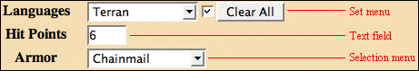
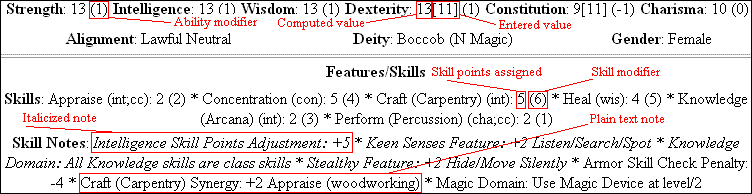

Quilvyn is a browser-based editor for RPG characters, particularly those generated using rules derived from the System Reference Document from Wizards of the Coast. It allows you to enter and modify basic information about a character—race, class levels, attributes like strength, and so on—and applies the rules from SRD v3.5 and other rule sets to modify these basic attributes and calculate computed attributes like saving throw bonuses and armor class. The program formats character attributes into a compact (typically one page) character sheet web page that you can print for reference during game play. You can save character information and later reload it into Quilvyn to update the character's attributes.
A tar and/or zip file containing the Quilvyn code can be obtained from https://github.com/jodaf/quilvyn-core/releases. The Quilvyn program consists of 14 files: README.md, index.html, quilvyn.html, core/Expr.js, core/Input.js, core/ObjectViewer.js, core/Quilvyn.js, core/QuilvynRules.js, core/QuilvynUtils.js, core/RuleEngine.js, core/gpl.txt, core/quilvyn.gif, plugins/SRD35.js, and plugins/ogl.txt. Documentation is provided by core/quilvyndoc.html and a pair of image files, core/editingobjects.gif and core/sheetfeatures.gif. In addition, the download also contains plugins/SRD35SpellPoints.js, which defines an alternative way of managing spellcasting. Using this is optional.
Quilvyn has been successfully tested using these browsers
quilvyn.html contains a section of definitions that allow you to set some user preferences. Quilvyn uses the BACKGROUND setting as the background color for its windows, and the program uses the DEFAULT_SHEET_STYLE to determine which style to use for character sheets. WARN_ABOUT_DISCARD determines whether or not Quilvyn warns you when ask to open a new character after making changes to the current one without saving. You can also add character sheet and editor customizations in quilvyn.html. See the comments in that file for details.
To run Quilvyn, simply use one of the web browsers listed above to open your local copy of quilvyn.html. If the program opens a plugin selection window, check the plugins you wish to use and press the "Ok" button to start the character editor. Quilvyn is written in JavaScript and makes extensive use of pop-up windows, so you must have both of these enabled in your browser. A reference installation of Quilvyn using the latest sources is available at http://www.jodaf.com/dnd/q2/.
Generating new characters and loading previously saved ones are both handled through Quilvyn's Character menu. The choices in this menu allow you to generate a new character, generate a character with random attribute values, reload the information for a previously-saved character, or import a character from information saved from a different browser. When you ask for a random character, Quilvyn opens a form that allows you to specify certain attributes, such as race and class level(s). This helps in the generation of NPCs. You can either specify these attributes, or leave the form unchanged to have Quilvyn choose them randomly.
The Character menu's Import option allows you to transfer character information saved from another browser. In the Import pop-up window, paste the character attributes definition ("var attributes = { ... }") from the header of the saved character sheet, then press OK. Quilvyn displays the character sheet generated from these attributes and saves the character into your browser's persistent storage. If you paste the attributes of multiple characters into a single Import pop-up, Quilvyn saves all of them and displays the last.
 The Quilvyn editor contains editing objects that allow you to change basic character attributes. The editor uses three different types of editing objects. Text fields are used for attributes, such as name and player, that have an infinite number of possible values. To modify one of these attributes, simply type the new value into the text field. In text fields that contain a number (e.g., hit points) you can instead enter a '+' followed by a number, and Quilvyn will add the number to the existing value of the field. Selection menus are used with attributes like alignment, race, and abilities like strength and intelligence. These editing objects give you a pull-down menu that contains all the possible values. Simply select the correct one to change the attribute. Set menus are used for collections of related attributes like skills, feats, weapons, and class levels. Along with a pull-down menu, these editing objects include either a checkbox or a small text field where you can enter a value. A checkbox is used for attributes, such as spells, where the character either has an attribute or not; the text field is used with attributes (e.g., skills, class levels) where the character has a variable score associated with the attribute. To change one of these attributes, first use the pull-down menu to select a particular attribute, then click the checkbox or enter a value in the text field. A "Clear All" button next to set menus lets you clear all attributes in a set with a single click. Some set menus have an accompanying filter box that allows you to determine which choices appear in its menu. This menu allows you to limit the choices shown to those of interest; only those choices that contain the text in this box are displayed in the menu.
In a separate browser frame or window, Quilvyn displays a character sheet based on the values of the editor. Every time you change a value in the editor, Quilvyn applies the rules from the selected rule set, then updates the character sheet to show you any computed changes.
Three "Show" checkboxes provide some control over what attributes the character sheet displays. The "Italic Notes" checkbox determines whether or not italicized notes are included on the sheet. See the discussion of the character sheet for an explanation as to why some notes are italicized and others are not. Checking the "Extras" box adds to the character sheet attributes such as race and class features that can be useful for reference during character development but that are not often used during play. The "Hidden" box allows you to produce a character sheet that contains additional information that should not be seen by the player. This includes any notes entered in the editor's "Hidden Notes" box and any attributes that depend on the "hidden" attribute.
A few items in the editor window don't relate directly to the contents of the character sheet. The "About" button opens a window with text describing Quilvyn, and the "Help" button opens one that contains this document. The "Rules" pull-down allows you to change between different character-generation rule sets—Quilvyn comes with support for the v3.5 System Reference Document, and plug-ins for different game versions and particular campaign settings are available. The "Notes" and "Rules" buttons next to this pull-down open windows with details about the particular rule set, and the Custom Items pull-down is discussed in Adding Custom Items. The "Character" menu is discussed in Generating and Loading Characters. The "Summary" item in the character menu opens a window with a table that summarizes attributes from all characters that you've opened since starting Quilvyn. This is intended to assist in planning and running adventures by providing a compact summary of the abilities of all the characters in a party. The "Save", "Save As...", "Delete...", and "HTML" items in the character menu are described in Saving Characters. The "Sheet Style" pull-down allows you to choose between different character sheet formats.
The "Randomize" menu allows you to let Quilvyn randomly determine most basic Quilvyn character attributes. The editor will select a random value for the attribute you choose and update both the editor display and the character sheet. For the six basic attributes—strength, intelligence, wisdom, constitution, dexterity, and charisma—Quilvyn computes the random value by randomly generating four numbers from 1 to 6 and summing the highest three. For other selection attributes, Quilvyn randomly selects one of the possible values. When selecting set values such as spells and feats, Quilvyn uses other information about the character (e.g., feat count) to randomly select the attribute values. Quilvyn selects enough set values to fill in the number of values appropriate for the character. For example, if a character is entitled to seven feats and five are already assigned, Quilvyn will randomly select the remaining two. The only text attribute that Quilvyn knows how to randomize is the character name. The names that the editor generates are more often amusing than useful, but you can usually get a pretty decent name from them with a little creative editing.
For security reasons, programs like Quilvyn are prohibited from writing files to your hard disk. Instead, character information is saved to your browser's persistent storage, where Quilvyn can access it later. The "Save" and "Save As..." items from the Character menu write information about the current character to the browser's persistent storage. You can later retrieve a saved character by selecting the character path from the Character menu. Use the "Delete..." item from the Character menu to remove a character's information from persistent storage.
If you want to cache a copy of your character sheet for viewing outside of Quilvyn, select the "HTML" item in the Character menu. Quilvyn opens a new window that contains the HTML for the character sheet. Copy and paste the contents of this window into your favorite editor and save the result as a web page (a file with an extension of .html or .htm).
Selecting the "Export..." item from the character menu opens a new window that displays the attributes for all characters in your browser's persistent storage. You can copy the contents of this window to a file for backup, or you can paste them into a Quilvyn Import window in a different browser to transfer characters from one browser to another.

The standard character sheet format that Quilvyn produces contains up to six sections: Header; Basic Attributes; Features and Skills; Combat; Magic; and Notes. Each of these lists related character attribute values, both entered and computed, along with notes about the attributes. Although most of the information on the sheet should be clear, a few aspects of the format require explanation.
Many feats have prerequisites that the character must meet before selecting that feat. A few base classes have alignment restrictions, and all prestige classes have prerequisites. Quilvyn doesn't enforce these requirements; you're free to enter, say, a chaotic neutral monk if you want to. However, in the notes section of the character sheet, the program includes validation notes about any restrictions that the character violates. These informational notes make you aware of any unmet restrictions, giving you the information you need to correct mistakes in the character attributes. An additional list shows Sanity Notes—comments on character attributes that, while legal, make little sense. For example, Quilvyn will warn you about a character whose Track feat is made useless by the absence of any ranks in the Survival skill.
You can list character possessions in the Notes section of the character sheet. Quilvyn assumes that any lines in this section that begin with an asterisk mark items that affect character attributes—abilities, armor class, etc. Quilvyn refers to items with such effects as "goodies". To have Quilvyn perform calculations using one of these items, include the name of the affected attribute and the amount of bonus with it. For example, including these three lines in the Notes section will raise the character's strength by two, their Sleight Of Hand skill by four, and their attack and damage with longswords by 1:
* Ring of Strength +2
* Cloak of Distraction (Sleight Of Hand skill +4)
* +1 Longsword
Multiple items can be listed on a single line separated by semicolons, so the above three items can also be listed as:
* Ring of Strength +2; Cloak of Shielding (Sleight Of Hand skill +4); +1 Longsword
Along with bonuses (and negative values for harmful items), Quilvyn computes the modifiers for armor and weapons listed as having masterwork quality. You can also note effects that change a normally cross-class skill into a class skill.
* Masterwork longsword
* Nomad background: Ride is a class skill
You can add weapons, armor, familiars, and other items to Quilvyn's menus using the Custom Items pull-down menu. Custom items are grouped into named collections that you can apply to a rule set to make the items available. The Custom Items pull-down displays the name of the current collection. In addition to user-defined collections, Quilvyn predefines a custom item collection for each loaded rule set. Every time Quilvyn runs, it automatically adds items in each predefined collection to the corresponding rule set; there's no need to apply the collection to its rule as a separate step.
Selecting the "New Collection..." item in the Custom Items menu creates a new collection with the name of your choice and makes it the current collection.
Selecting the "Delete Collection..." item in the Custom Items menu allows you to remove a user-defined collection and all the items in it. Deleting one of Quilvyn's predefined collections removes any items it contains but does not delete the collection itself.
The "View/Export All" and "Import..." items in the Custom Items menu allow you to save and later reload your custom items. This can be useful for backup purposes and for copying custom items when you change browsers.
Selecting the "Add Items..." item in the Custom Items menu opens a dialog box where you can enter the attributes for new custom items. Begin by using the "Type" menu to select the type of item you want to add. Quilvyn displays a set of editing objects that allow you to enter attributes specific to that type of item. For example, if you select "Weapon", editing objects will appear that allow you to enter the new weapon's name, group (Simple, Martial, or Exotic), category (Unarmed, Light, One-Handed, Two-Handed, or Ranged), damage, critical threat threshold, critical damage multiplier, and (for ranged weapons) range increment. Once you have entered all the necessary information, press the "Add" button. Your new item is saved in the current collection.
The "Delete Item..." item in the Custom Items menu opens a dialog box that allows you to remove a previously-entered custom item from the current collection. Note that, once a collection has been applied to the current rule set, deleted items continue to appear in the editor menu until the next time you launch Quilvyn.
Selecting the "Apply Collection..." item in the Custom Items menu allows you to add the custom items defined in the current collection to the current rule set. As mentioned above, Quilvyn automatically adds items in its predefined collections to the corresponding rule sets. The "Apply Collection..." item provides a way to make items from user-defined collections available in the editor menus.
For most custom item attributes, the values to enter into the Add Item dialog can be determined by looking at similar items from the core rule books. For example, for a new Animal Companion, Quilvyn prompts for the six basic abilities, hit dice, armor class, and damage, all of which are integer values. For Animal Companion damage, Quilvyn expects text in the format int'd'int[+int][,int'd'int[+int]]. For an Ape, the value would be 1d6+5,1d6+2; for a Baboon, 1d6+3. Text values that contain spaces need to be surrounded by double quotes, and multiple values entered in a single box should be separated by commas. For example, when entering a new Deity, you might enter "Light Mace" as in the Favored Weapon box and Good,Law,Strength in the Domain box.
In Quilvyn, Features describe the effects of both feats and class and racial features such as Darkvision and Bardic Knowledge. When adding a new feature, select the section of the character sheet where the note for the feature should appear, then enter the note text. Much like the starred notes discussed above, Quilvyn interprets the text of this note to update affected attributes. For example, if you add a feature named "Glib" with a note in the skill section that reads "+2 Bluff/+2 Perform (Oratory)", Quilvyn will update the skill modifier values for any character with that feature.
Many feats and classes have prerequisites that a character must meet in order to select them. In the customization dialog, these can be entered in the Prerequisite box for a new feat or class, with multiple prerequisites separated by commas. For example, taking a level in the Horizon Walker prestige class requires that the character have the Endurance feature and 8 ranks in Knowledge (Geography). This would be entered into the Prerequisite box for a custom class as follows. (Remember that text containing a space needs to be enclosed in double quotes.)
features.Endurance,"skills.Knowledge (Geography) >= 8"The Feat entry includes a similar Implies box for testing whether selecting the feat makes sense for a character. For example, although legal, selecting the Track feat makes no sense for a character with no ranks in Survival, so the Implies box for this feat would read
"skills.Survival > 0"